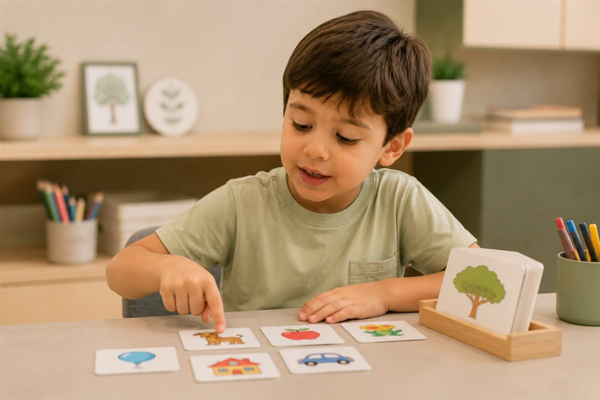
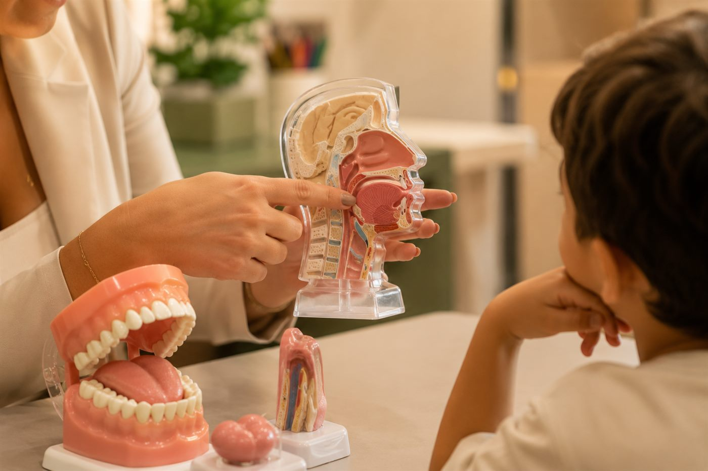
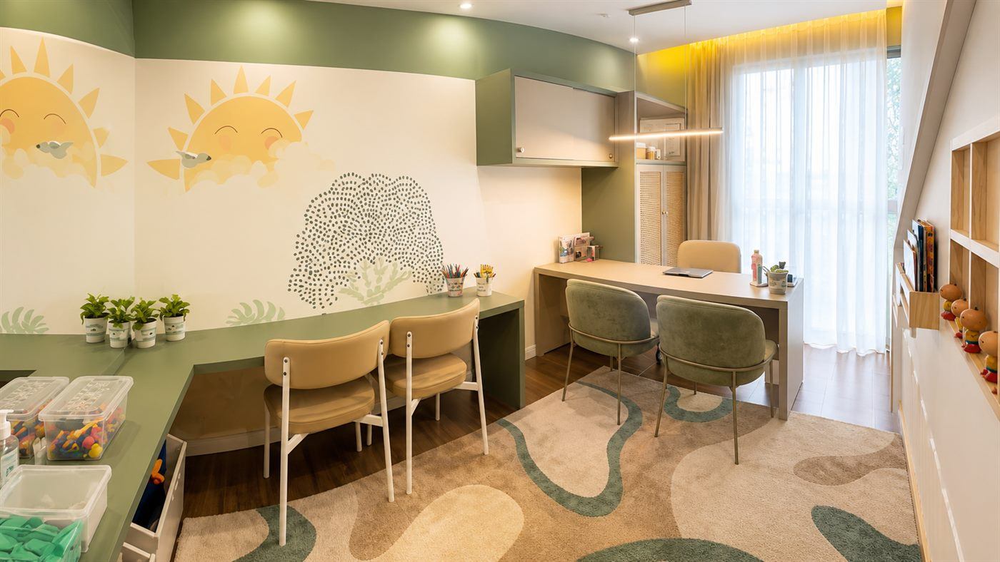

Queixa da escola
Seu filho tem entre 3 e 10 anos e a escola sinalizou alguma dificuldade relacionada à fala, à comunicação ou ao desenvolvimento da linguagem, indicando a importância de uma avaliação fonoaudiológica.

Avaliação individualizada e acompanhamento próximo da família.
Seu filho tem entre 3 e 10 anos e a escola sinalizou alguma dificuldade relacionada à fala, à comunicação ou ao desenvolvimento da linguagem, indicando a importância de uma avaliação fonoaudiológica.
Crianças que já falam e se comunicam, mas podem trocar alguns sons das palavras, deixando a fala diferente do esperado para a idade.
Crianças que estão demorando mais para começar a falar, apresentam poucas palavras para a idade ou ainda têm dificuldade para formar frases e se comunicar.
Crianças com dificuldades nos movimentos e funções da boca, como sucção, mastigação, respiração, deglutição ou controle de língua e lábios, que podem estar relacionadas a alterações na fala e em outras funções orais.
Famílias que preferem compreender os sinais e agir cedo, em vez de apenas esperar que as dificuldades desapareçam sozinhas.
Especialidades
Avaliação e intervenção individualizadas em fala, linguagem e motricidade orofacial na infância.
Cada criança tem seu próprio ritmo de desenvolvimento, mas existem marcos importantes que ajudam a acompanhar a evolução da comunicação. Quando o desenvolvimento da fala acontece de forma mais lenta do que o esperado para a idade, é importante realizar uma avaliação fonoaudiológica. A partir dessa avaliação, é possível identificar as necessidades individuais e promover, de forma lúdica e personalizada, o desenvolvimento da fala e da comunicação.

Os transtornos dos sons da fala são caracterizados pela dificuldade em produzir corretamente determinados sons, fazendo com que algumas palavras sejam pronunciadas de forma diferente do esperado. Popularmente, essa condição é conhecida como "trocas na fala". Quando essas alterações persistem além da idade esperada ou comprometem a inteligibilidade da fala, a avaliação e a terapia fonoaudiológica auxiliam a criança a desenvolver uma produção mais precisa dos sons, favorecendo uma comunicação clara, segura e eficiente.
A motricidade orofacial é a área da Fonoaudiologia que avalia e trata o funcionamento da língua, dos lábios, das bochechas, da mandíbula e de outras estruturas da boca e da face, responsáveis por funções como respirar, mastigar, engolir e falar. Muitas famílias chegam ao consultório por encaminhamento do dentista, ortodontista ou médico otorrinolaringologista, especialmente quando a criança apresenta respiração pela boca, dificuldade para mastigar, uso prolongado de chupeta ou mamadeira, língua entre os dentes ou alterações na mordida. O acompanhamento fonoaudiológico busca restabelecer o equilíbrio dessas funções, contribuindo para um desenvolvimento saudável e complementando o tratamento realizado por esses profissionais.
Como funciona
Seis etapas claras, da conversa inicial ao acompanhamento
contínuo dos resultados.

Contempla a coleta de informações referentes à história da criança e da família, incluindo aspectos do desenvolvimento, experiências, rotina, hábitos, necessidades e motivos relacionados à busca pela avaliação.
A avaliação fonoaudiológica é construída a partir da história, da queixa e das características de cada paciente. São investigados os aspectos relevantes para a compreensão do caso, com a seleção criteriosa de instrumentos e procedimentos fundamentados em evidências científicas. O objetivo é compreender as demandas de cada paciente e direcionar uma intervenção adequada.
Explicação clara dos resultados da avaliação, com acolhimento e elaboração de um plano de intervenção individualizado para a criança.
Intervenções individualizadas que combinam estímulos técnicos e atividades lúdicas, planejadas de acordo com o perfil e as necessidades da criança, promovendo seu desenvolvimento com a participação ativa da família em todas as etapas do processo.
Orientações e propostas de atividades para serem realizadas pela família, com o objetivo de estimular e dar continuidade às habilidades desenvolvidas nas sessões.
Comunicação e troca de informações com professores e equipe escolar, visando alinhar estratégias, compartilhar observações e construir ações conjuntas que favoreçam a continuidade do desenvolvimento do aluno no ambiente escolar.
Recursos
Conheça os recursos que potencializam cada etapa do processo terapêutico.


Benefícios
A família compreende o desenvolvimento infantil e participa das decisões com mais conhecimento e segurança
A criança desenvolve uma comunicação mais eficiente, fortalecendo sua autonomia, participação e autoconfiança
A rotina da família passa a fazer parte da terapia, transformando momentos do dia a dia em oportunidades de desenvolvimento
Uma comunicação mais eficiente fortalece a fala e prepara a criança para novos desafios, como a alfabetização
Família, escola e profissionais caminham na mesma direção por meio da gestão de caso
A família ganha autonomia para favorecer o desenvolvimento da criança muito além das sessões
Cada decisão terapêutica é individualizada, baseada em evidências e construída para as necessidades de cada criança
Resultados
Avaliações reais publicadas por famílias atendidas no Google.
Sobre
Antes de ser fonoaudióloga, sou mãe do Felipe e da Ana Clara. A maternidade transformou profundamente a minha forma de enxergar a infância, o desenvolvimento infantil e o papel da família na construção da história de uma criança.
Sou fonoaudióloga, graduada pela Universidade de São Paulo (USP), com pós-graduação em Fala Infantil e mestrado em Fisiopatologia Experimental pela Faculdade de Medicina da USP. Minha trajetória sempre foi guiada pelo compromisso com a ciência e pela busca constante das melhores evidências para oferecer um cuidado ético, individualizado e de excelência.
Mas foi a experiência de ser mãe que deu um novo significado a tudo o que aprendi como profissional.
Compreendi que o desenvolvimento não acontece apenas dentro do consultório. Ele acontece nas conversas do dia a dia, nas brincadeiras compartilhadas, nos momentos de cuidado, nos limites, no afeto, na presença e nas experiências que uma família constrói ao longo da infância.
Foi nesse encontro entre a ciência e a maternidade que encontrei a minha missão.
Hoje, mais do que acompanhar o desenvolvimento da fala, caminho ao lado das famílias para que elas compreendam seus filhos, participem das decisões com segurança e se tornem protagonistas dessa jornada.
Acredito que nenhum conhecimento é maior do que o amor entre pais e filhos. O meu papel é transformar o conhecimento científico em orientação, clareza e confiança, para que esse amor encontre direção e se transforme em oportunidades reais de desenvolvimento.
Por isso, minha prática une educação continuada para as famílias, gestão de caso, um olhar integral para a criança e atuação baseada em evidências. Cada decisão terapêutica respeita a singularidade de cada criança e busca integrar família, escola e demais profissionais em um mesmo propósito.
Porque acredito que uma criança que é compreendida desenvolve confiança para se comunicar. E uma família que compreende seu filho não transforma apenas a fala: transforma a forma de viver a infância — um tempo breve, mas capaz de deixar marcas para toda a vida.
Se você tem dúvidas sobre o desenvolvimento da fala, da comunicação ou das funções orais do seu filho, uma avaliação fonoaudiológica pode trazer respostas e indicar o melhor caminho.
Se você deseja agir precocemente e entender melhor o desenvolvimento do seu filho, este espaço é para você.
Contato
Atendimento individualizado e presencial na Vila Leopoldina. Entre em contato para agendar uma avaliação ou esclarecer suas dúvidas.
Av. Imperatriz Leopoldina, 957 — Conjunto 2506
Vila Leopoldina, São Paulo — SP
CEP 05305-011
Atendimento exclusivamente presencial, mediante agendamento prévio.
(11) 94262-6054
@tatianamurarifono

O mapa é carregado somente quando solicitado, para não afetar a performance da página.